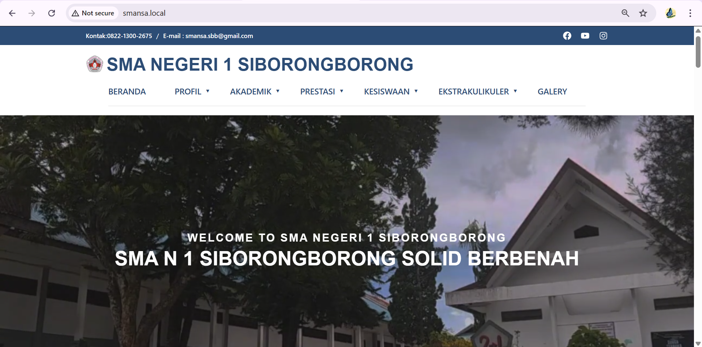

01

Portal Informasi SMAN 1 Siborong-borong
Sistem manajemen informasi sekolah berbasis WordPress CMS dengan tata letak responsif. Dikembangkan menggunakan metodologi Agile dan didokumentasikan sebagai jurnal ilmiah.
WordPress
CMS
Agile
CSS
View Project →